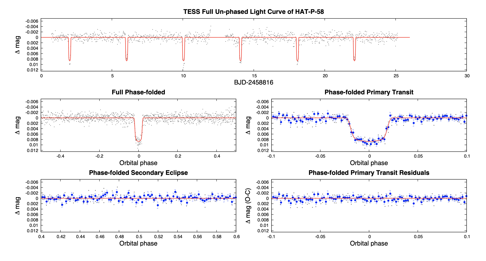
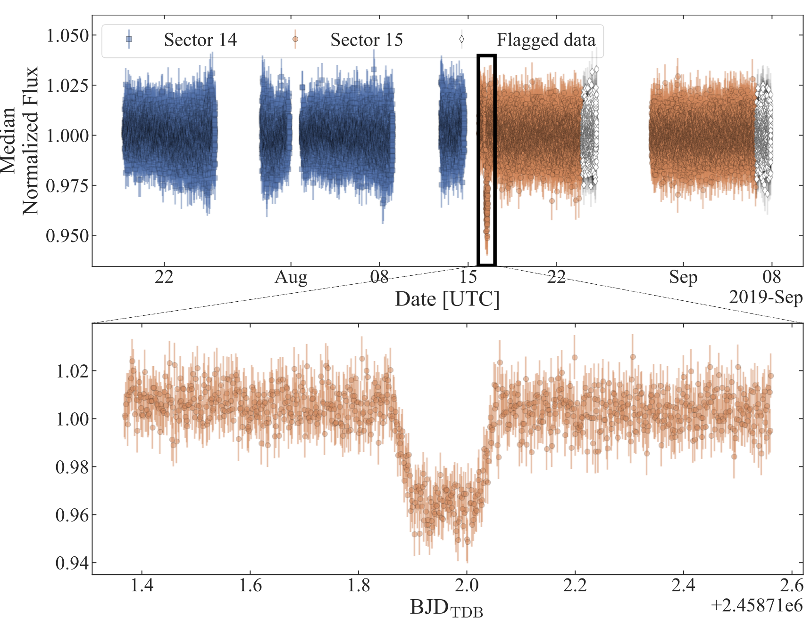

STATUS UPDATE: TESS Sector 25 data will be available this week, see here.
Welcome TESS followers to this week's news bulletin! This week we present three papers using TESS data from the archive.
HAT-P-58b -- HAT-P-64b: Seven Planets Transiting Bright Stars (Bakos et. al., 2020): In this paper the authors report the discovery and characterization of seven transiting exoplanets from the HATNet survey. The planets discovered are all hot Jupiters and Saturns, transiting bright sun-like stars. The names of the planets are HAT-P-58b (mass M = 0.37 MJ, radius R = 1.33 RJ, and orbital period P = 4.0138 days), HAT-P-59b (M = 1.54 MJ, R = 1.12 RJ, P = 4.1420 days), HAT-P-60b (M = 0.57 MJ, R = 1.63 RJ, P = 4.7948 days), HAT-P-61b (M = 1.06 MJ, R = 0.90 RJ, P = 1.9023 days), HAT-P-62b (M = 0.76 MJ, R = 1.07 RJ, P = 2.6453 days), HAT-P-63b (M = 0.61 MJ, R = 1.12 RJ, P = 3.3777 days), and HAT-P-64b (M = 0.58 MJ, R = 1.70 RJ, P = 4.0072 days). The authors also present accurate stellar parameters for each host star. TESS long-cadenced data is used in the analysis of five of the seven systems. Of particular note is HAT-P-59 (TOI-1826.01) which is within the Northern continuous viewing zone of the TESS mission, and HAT-P-60, otherwise known as TESS candidate TOI-1580.01.
A warm Jupiter transiting an M dwarf: A TESS single transit event confirmed with the Habitable-zone Planet Finder (Cañas et. al., 2020): The authors confirm the planetary nature of a warm Jupiter transiting an M0 dwarf designated TOI-1899. The confirmation was made using photometric data from TESS, near-infrared spectroscopy with the Habitable-zone Planet Finder (HPF), and speckle and adaptive optics imaging. The transiting planet has an orbit of 29 days, a mass of 0.66 MJ, and a radius of 1.37 RJ. TOI-1899 is the lowest mass star known to host a transiting “puffy warm Jupiter”.
Multi-Wavelength Variability of BL Lacertae Measured with High Time Resolution (Weaver et al., 2020): This paper aims to increase our understanding of variability in blazer jets. To do this the authors have obtained high time resolution observations of BL Lacertae in multiple bands, using multiple facilities including TESS, the Neil Gehrels Swift satellite, the Nuclear Spectroscopic Telescope Array, the Fermi Large Area Telescope, and the Whole Earth Blazar Telescope for optical flux density and polarization measurements. All light curves are correlated, with similar structure on timescales from hours to days. The shortest timescale of variability is in the optical and observed with TESS at ~0.5 hr. The most common timescale is 13hrs, and is similar to the X-ray variability. Studies by the authors using the multi-frequency probes indicate that the timescales of variability observed, cross-frequency lags, and polarization properties can be explained "by turbulent plasma that is energized by a shock in the jet and subsequently loses energy to synchrotron and inverse Compton radiation in a magnetic field of strength ∼ 3 G."

Fig 1: Taken from Bakos et al., (2020). TESS long-cadence light curve for HAT-P-58. The full un-phased light curve as a function of time is given in the top-panel, the full phase-folded light curve on the middle-left, the phase-folded light curve zoomed-in on the planetary transit on the middle-right, the phase-folded light curve zoomed-in on the secondary eclipse in the bottom-left, and the residuals from the best-fit model, phase-folded and zoomed-in on the planetary transit in the bottom-right. The solid line in each panel shows the model fit to the light curve, account for the 30 min integrations. The dark filled circles show the light curve binned in phase with a bin size of 0.002.

Fig 2: Taken from Canas et. al., (2020). The TESS photometry of TOI-1899. Top panels is the short-cadence Pre-search Data Conditioning Simple Aperture Photometry light curve. Each sector is plotted in a different marker and has been normalized by its respective median value. The white diamonds represent the data that were flagged by the TESS pipeline due to scattered light contamination. The rectangle marks a region spanning ∼ 1.2 days around the single transit event observed in Sector 15. The bottom panel is an enlarged version of the data contained in the rectangle. The observed transit is a single, ∼ 5% flat-bottomed event with a duration of ∼ 5 hours.